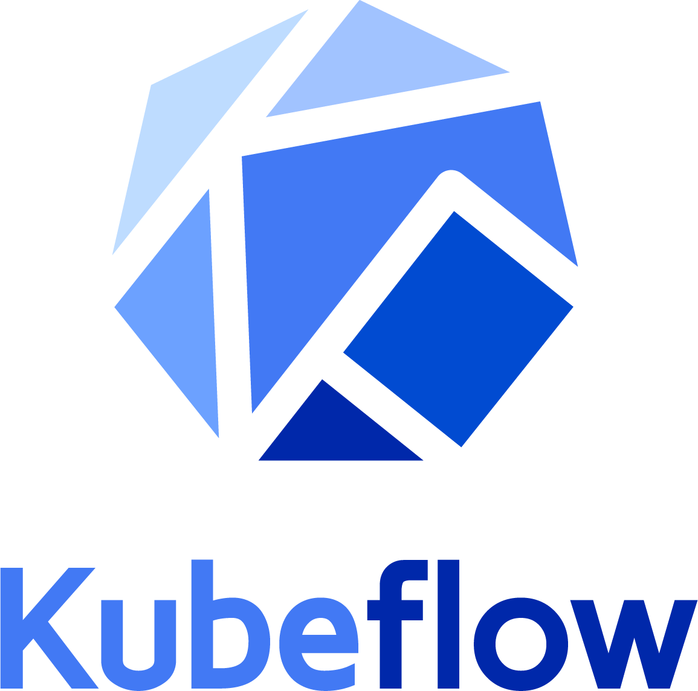

[ML on GCP C7] Kubeflow End to End
Introduction

Kubeflow is a machine learning toolkit for Kubernetes. The project is dedicated to making deployments of machine learning (ML) workflows on Kubernetes simple, portable, and scalable. The goal is to provide a straightforward way to deploy best-of-breed open-source systems for ML to diverse infrastructures.
A Kubeflow deployment is:
- Portable - Works on any Kubernetes cluster, whether it lives on Google Cloud Platform (GCP), on-premise, or across providers.
- Scalable - Can utilize fluctuating resources and is only constrained by the number of resources allocated to the Kubernetes cluster.
- Composable - Enhanced with service workers to work offline or on low-quality networks
Kubeflow will let you organize loosely-coupled microservices as a single unit and deploy them to a variety of locations, whether that's a laptop or the cloud. This codelab will walk you through creating your own Kubeflow deployment.
What you'll build
In this lab you're going to build a web app that summarizes GitHub issues using a trained model. Upon completion, your infrastructure will contain:
-
A GKE cluster with standard Kubeflow and Seldon Core installations
-
A training job that uses Tensorflow to generate a Keras model
-
A serving container that provides predictions
-
A UI that uses the trained model to provide summarizations for GitHub issues
What you'll learn
-
How to install Kubeflow
-
How to run training using the Tensorflow job server to generate a Keras model
-
How to serve a trained model with Seldon Core
-
How to generate and use predictions from a trained model
What you'll need
-
A basic understanding of Kubernetes
-
A GitHub account
Setup the environment
Qwiklabs setup
What you'll need
To complete this lab, you’ll need:
-
Access to a standard internet browser (Chrome browser recommended).
-
Time. Note the lab’s Completion time in Qwiklabs. This is an estimate of the time it should take to complete all steps. Plan your schedule so you have time to complete the lab. Once you start the lab, you will not be able to pause and return later (you begin at step 1 every time you start a lab).
-
The lab's Access time is how long your lab resources will be available. If you finish your lab with access time still available, you will be able to explore the Google Cloud Platform or work on any section of the lab that was marked "if you have time". Once the Access time runs out, your lab will end and all resources will terminate.
-
You DO NOT need a Google Cloud Platform account or project. An account, project and associated resources are provided to you as part of this lab.
-
If you already have your own GCP account, make sure you do not use it for this lab.
-
If your lab prompts you to log into the console, use only the student account provided to you by the lab. This prevents you from incurring charges for lab activities in your personal GCP account.
Start your lab
When you are ready, click Start Lab. You can track your lab’s progress with the status bar at the top of your screen.
Find Your Lab’s GCP Username and Password
To access the resources and console for this lab, locate the Connection Details panel in Qwiklabs. Here you will find the account ID and password for the account you will use to log in to the Google Cloud Platform:

If your lab provides other resource identifiers or connection-related information, it will appear on this panel as well.
Log in to Google Cloud Console
Using the Qwiklabs browser tab/window or the separate browser you are using for the Qwiklabs session, copy the Username from the Connection Details panel and click the Open Google Console button.
You'll be asked to Choose an account. Click Use another account.
Paste in the Username, and then the Password as prompted:
Accept the terms and conditions.
Since this is a temporary account, which you will only have to access for this one lab:
- Do not add recovery options
- Do not sign up for free trials
Activate Google Cloud Shell
Google Cloud Shell provides command-line access to your GCP resources.
From the GCP Console click the Cloud Shell icon on the top right toolbar:

Then click START CLOUD SHELL:

It takes a few moments to provision and connects to the environment:
The Cloud Shell is a virtual machine loaded with all the development tools you’ll need. It offers a persistent 5GB home directory, and runs on the Google Cloud, greatly enhancing network performance and authentication.
Once connected to the cloud shell, you'll see that you are already authenticated and the project is set to your PROJECT_ID:
gcloud auth list
Output:
Credentialed accounts:
- <myaccount>@<mydomain>.com (active)gcloud config list project
Output:
[core]
project = <PROJECT_ID>Close the main Navigation Menu by clicking the three lines at the top left of the screen (hamburger), next to the Google Cloud Platform logo.
Enable Boost Mode
In the Cloud Shell window, click on the Setting icon at the far right. Select Enable Boost Mode, then Restart Cloud Shell in Boost Mode. This will provision a larger instance for your Cloud Shell session, resulting in speedier Docker builds.
Download the project files
The following commands in Cloud Shell to download and unpack an archive of the Kubeflow examples repo, which contains all of the official Kubeflow examples:
wget https://github.com/kubeflow/examples/archive/v0.2.zip
unzip v0.2.zip
mv examples-0.2 ${HOME}/examplesSet your GitHub token
This lab involves the use of many different files obtained from public repos on GitHub. To prevent rate-limiting, setup an access token with no permissions. This is simply to authorize you as an individual rather than anonymous user.
-
Navigate to https://github.com/settings/tokens and generate a new token with no permissions.
-
Save it somewhere safe. If you lose it, you will need to delete and create a new one.
-
Set the GITHUB_TOKEN environment variable:
export \
GITHUB_TOKEN=<token>Install Ksonnet
Set the correct version and an environment variable:
export KS_VER=ks_0.11.0_linux_amd64Install the binary
Download and unpack the appropriate binary, then add it to your $PATH:
wget -O /tmp/$KS_VER.tar.gz https://github.com/ksonnet/ksonnet/releases/download/v0.11.0/$KS_VER.tar.gzmkdir -p ${HOME}/bin
tar -xvf /tmp/$KS_VER.tar.gz -C ${HOME}/binexport PATH=$PATH:${HOME}/bin/$KS_VERRetrieve the project ID
Store the project ID and activate the latest scopes:
export PROJECT_ID=$(gcloud config get-value project)
gcloud config set container/new_scopes_behavior trueCreate a service account
Create a service account with read/write access to storage buckets:
export SERVICE_ACCOUNT=github-issue-summarization
export SERVICE_ACCOUNT_EMAIL=${SERVICE_ACCOUNT}@${PROJECT_ID}.iam.gserviceaccount.com
gcloud iam service-accounts create ${SERVICE_ACCOUNT} \
--display-name "GCP Service Account for use with kubeflow examples"
gcloud projects add-iam-policy-binding ${PROJECT_ID} --member \
serviceAccount:${SERVICE_ACCOUNT_EMAIL} \
--role=roles/storage.adminGenerate a credentials file for upload to the cluster:
export KEY_FILE=${HOME}/secrets/${SERVICE_ACCOUNT_EMAIL}.json
gcloud iam service-accounts keys create ${KEY_FILE} \
--iam-account ${SERVICE_ACCOUNT_EMAIL}Create a storage bucket
Create a Cloud Storage bucket for storing your trained model and issue the “mb” (make bucket) command:
export BUCKET=kubeflow-${PROJECT_ID}
gsutil mb -c regional -l us-central1 gs://${BUCKET}Create a cluster
Create a managed Kubernetes cluster on Kubernetes Engine by running:
gcloud container clusters create kubeflow-qwiklab \
--machine-type n1-standard-4 \
--zone us-central1-a \
--scopes=compute-rw,storage-rw \
--enable-autorepairCluster creation will take a few minutes to complete.
Connect your local environment to the Google Kubernetes Engine (GKE) cluster:
gcloud container clusters get-credentials kubeflow-qwiklab --zone us-central1-aThis configures your kubectl context so that you can interact with your cluster. To verify the connection, run the following command:
kubectl cluster-infoVerify that this IP address matches the IP address corresponding to the Endpoint in your Google Cloud Platform Console or by comparing the Kubernetes master IP is the same as the Master_IP address in the previous step.
To enable the installation of Kubeflow and Seldon components, run the following to create two ClusterRoleBindings, which allows the creation of objects:
kubectl create clusterrolebinding default-admin \
--clusterrole=cluster-admin \
--user=$(gcloud config get-value account)kubectl create clusterrolebinding seldon-admin \
--clusterrole=cluster-admin \
--serviceaccount=default:defaultUpload service account credentials:
kubectl create secret generic user-gcp-sa \
--from-file=user-gcp-sa.json="${KEY_FILE}"Install Kubeflow with Seldon
Ksonnet is a templating framework, which allows us to utilize common
object definitions and customize them to our environment. We begin by
referencing Kubeflow templates and apply environment-specific
parameters. Once manifests have been generated specifically for our
cluster, they can be applied like any other kubernetes object using kubectl.
Initialize a ksonnet app
Run these commands to go inside the github_issue_summarization directory; then create an new ksonnet app directory, fill it with boilerplate code, and retrieve component files:
cd ${HOME}/examples/github_issue_summarization
ks init kubeflow
cd kubeflow
cp ../ks-kubeflow/components/kubeflow-core.jsonnet components
cp ../ks-kubeflow/components/params.libsonnet components
cp ../ks-kubeflow/components/seldon.jsonnet components
cp ../ks-kubeflow/components/tfjob-v1alpha2.* components
cp ../ks-kubeflow/components/ui.* componentsInstall packages and generate core components
Register the Kubeflow template repository:
export VERSION=v0.2.0-rc.1
ks registry add kubeflow github.com/kubeflow/kubeflow/tree/${VERSION}/kubeflowInstall Kubeflow core and Seldon components:
ks pkg install kubeflow/core@${VERSION}
ks pkg install kubeflow/tf-serving@${VERSION}
ks pkg install kubeflow/tf-job@${VERSION}
ks pkg install kubeflow/seldon@${VERSION}Create the environment
Define an environment that references our specific cluster:
ks env add gke
ks param set --env gke kubeflow-core \
cloud "gke"
ks param set --env gke kubeflow-core \
tfAmbassadorServiceType "LoadBalancer"Apply the generated manifests to the cluster to create the Kubeflow and Seldon components:
ks apply gke -c kubeflow-core -c seldonYour cluster now contains a Kubeflow installation with Seldon with the following components:
- Reverse HTTP proxy (Ambassador)
- Central dashboard
- Jupyterhub
- TF job dashboard
- TF job operator
- Seldon cluster manager
- Seldon cache
You can view the components by running:
kubectl get podsYou should see output similar to this:
Train a model
In this section, you will create a component that trains a model.
Set the component parameters:
cd ${HOME}/examples/github_issue_summarization/kubeflow
ks param set --env gke tfjob-v1alpha2 image "gcr.io/kubeflow-examples/tf-job-issue-summarization:v20180629-v0.1-2-g98ed4b4-dirty-182929"
ks param set --env gke tfjob-v1alpha2 output_model_gcs_bucket "${BUCKET}"The training component tfjob-v1alpha2 is now configured
to use a pre-built image. If you would prefer to generate your own
instead, continue with the Optional create the training image step.
Launch training
Apply the component manifests to the cluster:
ks apply gke -c tfjob-v1alpha2View the running job
View the resulting pods:
kubectl get podsYour cluster state should look similar to this:
It can take a few minutes to pull the image and start the container.
Once the new pod is running, tail the logs:
kubectl logs -f \
$(kubectl get pods -ltf_job_key=tfjob-issue-summarization -o=jsonpath='{.items[0].metadata.name}')Inside the pod, you will see the download of source data (github-issues.zip)
before training begins. Continue tailing the logs until the pod exits
on its own and you find yourself back at the command prompt. When you
see the command prompt, continue with the next step.
To verify that training completed successfully, check to make sure all three model files were uploaded to your GCS bucket:
gsutil ls gs://${BUCKET}/github-issue-summarization-dataYou should see something like this:
Serve the trained model
In this section, you will create a component that serves a trained model.
Set component parameters:
export SERVING_IMAGE=gcr.io/kubeflow-examples/issue-summarization-model:v20180629-v0.1-2-g98ed4b4-dirty-182929Create the serving image
The serving component is configured to run a pre-built image, to save you some time. If you would prefer to serve the model you created in the previous step, you can generate your own by continuing with Optional image creation step. Otherwise, continue with the Create the serving component step.
Create the serving component
This serving component is configured to run a pre-built image. Using a Seldon ksonnet template, generate the serving component.
Navigate back to the ksonnet app directory and issue the following command:
cd ${HOME}/examples/github_issue_summarization/kubeflow
ks generate seldon-serve-simple issue-summarization-model \
--name=issue-summarization \
--image=${SERVING_IMAGE} \
--replicas=2Launch serving
Apply the component manifests to the cluster:
ks apply gke -c issue-summarization-modelView the running pods
You will see several new pods appear:
kubectl get podsYour cluster state should look similar to this:
Wait a minute or two and re-run the previous command. Once the pods are running, tail the logs for one of the serving containers to verify that it is running on port 9000:
kubectl logs \
$(kubectl get pods \
-lseldon-app=issue-summarization \
-o=jsonpath='{.items[0].metadata.name}') \
issue-summarizationPress Ctrl + C to return to the command line.
Add a UI
Set parameter values
cd ${HOME}/examples/github_issue_summarization/kubeflow
ks param set --env gke ui image "gcr.io/kubeflow-examples/issue-summarization-ui:v20180629-v0.1-2-g98ed4b4-dirty-182929"
ks param set --env gke ui githubToken ${GITHUB_TOKEN}
ks param set --env gke ui modelUrl "http://issue-summarization.default.svc.cluster.local:8000/api/v0.1/predictions"
ks param set --env gke ui serviceType "LoadBalancer"(Optional) Create the UI image
The UI component is now configured to use a pre-built image. If you would prefer to generate your own instead, continue with this step.
Switch to the docker directory and build the image for the UI:
cd ${HOME}/examples/github_issue_summarization/docker
docker build -t gcr.io/${PROJECT_ID}/issue-summarization-ui:latest .After it has been successfully built, store it in GCR:
gcloud docker -- push gcr.io/${PROJECT_ID}/issue-summarization-ui:latestUpdate the component parameter with a link that points to the custom image:
cd ${HOME}/examples/github_issue_summarization/kubeflow
ks param set --env gke ui image gcr.io/${PROJECT_ID}/issue-summarization-ui:latestLaunch the UI
Apply the component manifests to the cluster:
ks apply gke -c uiYou should see an additional pod, it's status will be ContainerCreating:
View the UI
To view the UI, get the external IP address:
kubectl get svc issue-summarization-uiWait until the external IP address has been populated. Re-run the command until it appears. Copy the External-IP address.
In a browser, paste the EXTERNAL-IP to view the results. You should see something like this:
Click the Populate Random Issue button to fill in the large text box with a random issue summary. Then click the Generate Title button to view the machine generated title produced by your trained model. Click the button a couple of times to give yourself some more data to look at in the next step.
View serving container logs
In Cloud Shell, tail the logs of one of the serving containers to verify that it is receiving a request from the UI and providing a prediction in response:
kubectl logs -f \
$(kubectl get pods \
-lseldon-app=issue-summarization \
-o=jsonpath='{.items[0].metadata.name}') \
issue-summarizationBack in the UI, press the Generate Title button a few times to view the POST request in Cloud Shell. Since there are two serving containers, you might need to try a few times before you see the log entry.
Press Ctrl+C to return to the command prompt.
Clean up
Remove GitHub token
Navigate to https://github.com/settings/tokens and remove the generated token.
End your lab
When you have completed your lab, click End Lab. Qwiklabs removes the resources you’ve used and cleans the account for you.
You will be given an opportunity to rate the lab experience. Select the applicable number of stars, type a comment, and then click Submit.
The number of stars indicates the following:
- 1 star = Very dissatisfied
- 2 stars = Dissatisfied
- 3 stars = Neutral
- 4 stars = Satisfied
- 5 stars = Very satisfied
You can close the dialog box if you don't want to provide feedback.
For feedback, suggestions, or corrections, please use the Support tab.
Last Tested Date: 12-11-2018
Last Updated Date: 12-11-2018
©2018 Google LLC All rights reserved. Google and the Google logo are trademarks of Google LLC. All other company and product names may be trademarks of the respective companies with which they are associated.